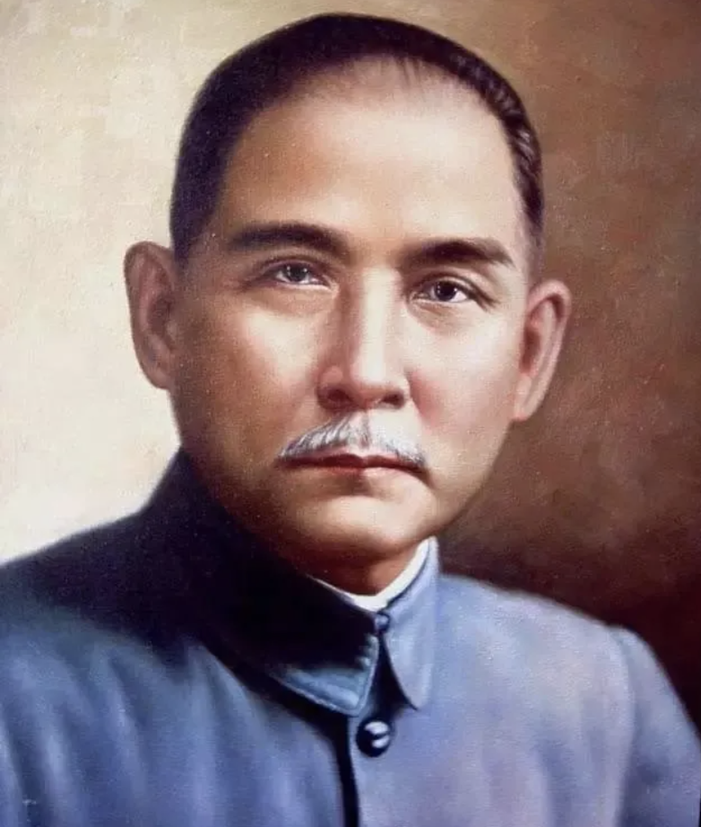

Sun Yat-sen(🇨🇳):
[1866. 11. 12 ~ 1925. 03.12]
Achievements
Ideological Ally of Korean Independence: Advocated for the support of weak nations and explicitly endorsed Korean independence and the legitimacy of the Korean Provisional Government.
- Approved Diplomatic Recognition (1921): As leader of the Chinese Constitutional Protection Government, approved mutual diplomatic recognition with the Korean Provisional Government, supported Korean student enrollment in Chinese military academies, and cooperated on international propaganda for Korean independence.
- Recognized Korea’s Provisional Government as Legitimate: In 1921, formally acknowledged the Provisional Government as the lawful democratic republican government of the Korean people.
- Stabilized Korea’s Early Government-in-Exile: His support played a key role in the international legitimacy and internal stability of the early Korean Provisional Government.